Note
Hello, welcome to the SunFounder Raspberry Pi & Arduino & ESP32 Enthusiasts Community on Facebook! Dive deeper into Raspberry Pi, Arduino, and ESP32 with fellow enthusiasts.
Why Join?
Expert Support: Solve post-sale issues and technical challenges with help from our community and team.
Learn & Share: Exchange tips and tutorials to enhance your skills.
Exclusive Previews: Get early access to new product announcements and sneak peeks.
Special Discounts: Enjoy exclusive discounts on our newest products.
Festive Promotions and Giveaways: Take part in giveaways and holiday promotions.
👉 Ready to explore and create with us? Click [here] and join today!
Fun3 Shooting
Ever watched those thrilling shooting games on TV, where contestants expertly target the bullseye to rack up points? Now, you can experience the same adrenaline rush right here in Scratch! In our interactive shooting game, you’ll use the Crosshair sprite to aim and hit as close to the bullseye as possible, maximizing your score with each precise shot.
To begin, click the green flag. You’ll control your shots using the innovative Obstacle Avoidance module. Ready to test your aim and reflexes? Let’s see how you score!
Below are the steps for implementing the project. It is recommended to follow these steps initially, and once familiar, you may modify the effects as desired.
1. Paint the Crosshair sprite
Delete the default sprite, select the Sprite button, and click Paint.
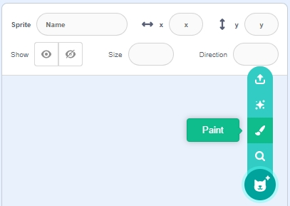
Proceed to the Costumes page. Use the Circle tool, remove the fill color, and set the outline’s color and width.
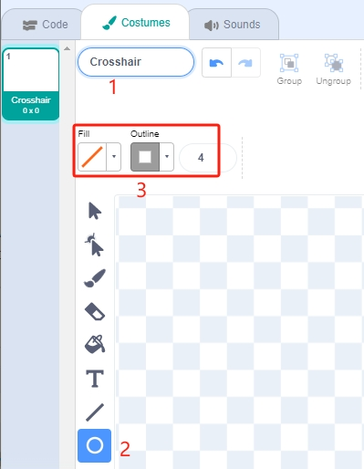
Draw a circle with the Circle tool. After drawing, use the Select tool to align the circle’s center with the canvas’s center.
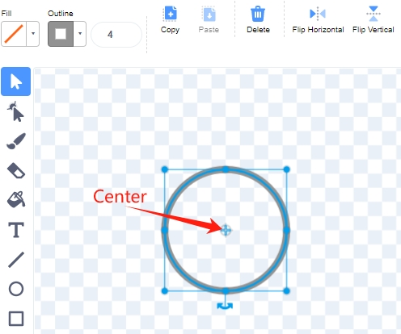
With the Line tool, draw a cross inside the circle.
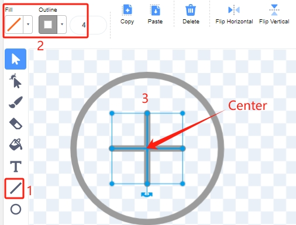
Finally, return to the Code page and rename the sprite to “Crosshair”.
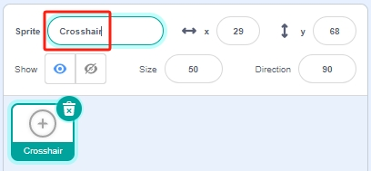
2. Paint the Target sprite
Similarly, select the Sprite button and click Paint.
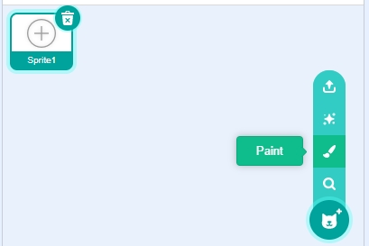
Enter the Costumes page. Use the Circle tool, select a black color, remove the Outline, and paint a large circle.
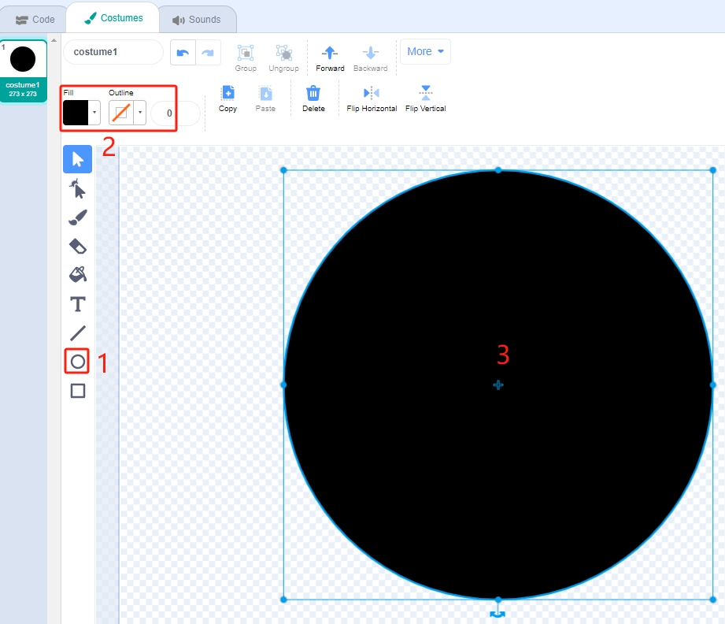
Draw additional circles using the same method, each in a different color. Adjust the position of overlapping circles using the Forward or Backward tool to ensure all circles’ origins align with the canvas’s center.
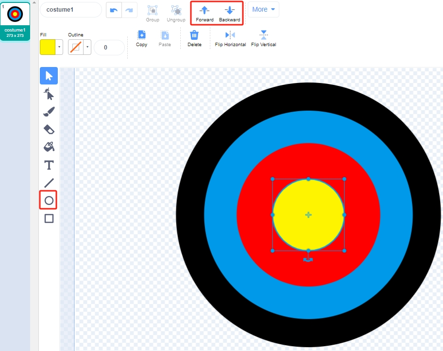
Return to the Code page and rename this sprite “Target”.
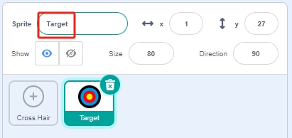
{kind=link}
{kind=link}
3. Add a backdrop
Add a suitable backdrop that is preferably less colorful and does not match the colors of the Target sprite. I have chosen the Wall1 backdrop.
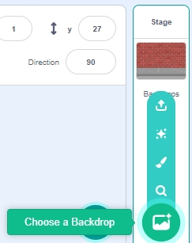
Adjust the positions and sizes of the Target and Crosshair sprites.
Note
Ensure the Crosshair sprite is layered above the Target sprite by moving the Target sprite first and then the Crosshair.
The Crosshair should be smaller than the space between the color rings of the Target sprite.
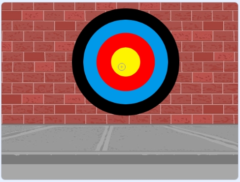
4. Script the Crosshair sprite
Randomize the position and size of the Crosshair sprite, allowing it to move unpredictably.
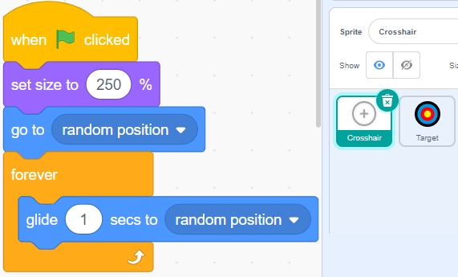
When the left obstacle avoidance module is blocked, a message is broadcast - shooting.
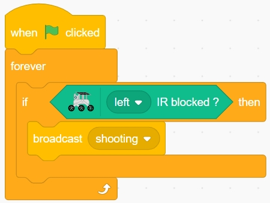
When the shooting message is received, the sprite stops moving and gradually shrinks, simulating the shooting of a bullet.
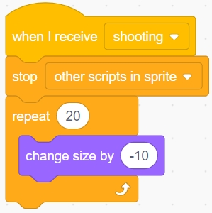
Use the [Touch color ()] block to determine the shot’s position.
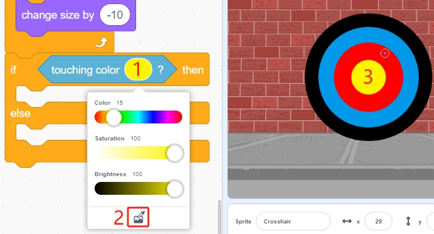
Report a score of 10 if the shot lands inside the yellow circle.
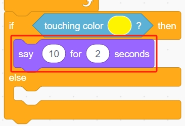
Report a score of 9 if the shot lands inside the red circle. Similarly, use the [Touch color ()] block to match the color of the red circle.
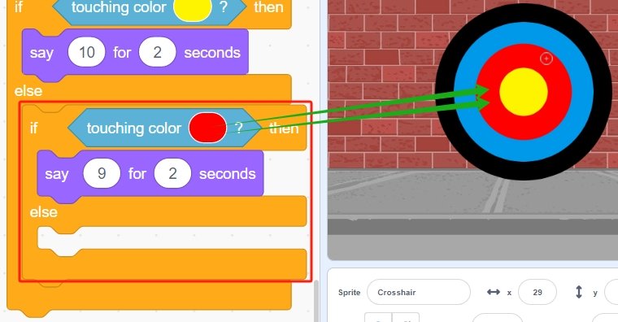
Use the same method to confirm the bullet’s landing. If it does not land on the Target sprite, it indicates a miss.
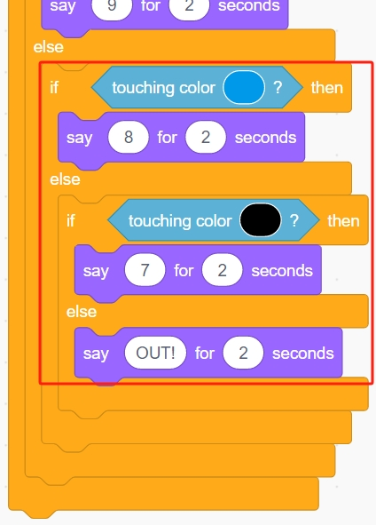
{kind=link}
{kind=link}
Programming is complete. You can now click the green flag to run the script and see if it achieves the desired effect.